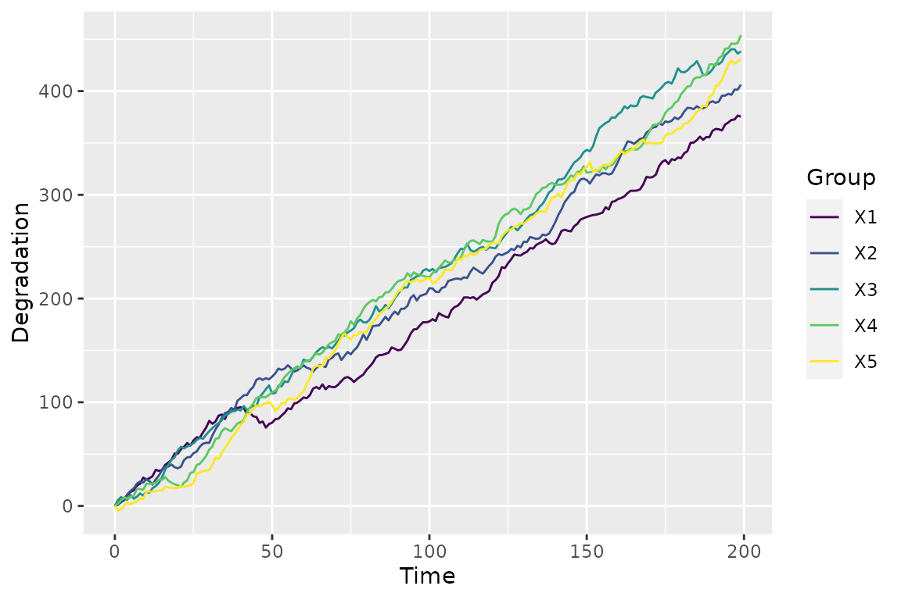
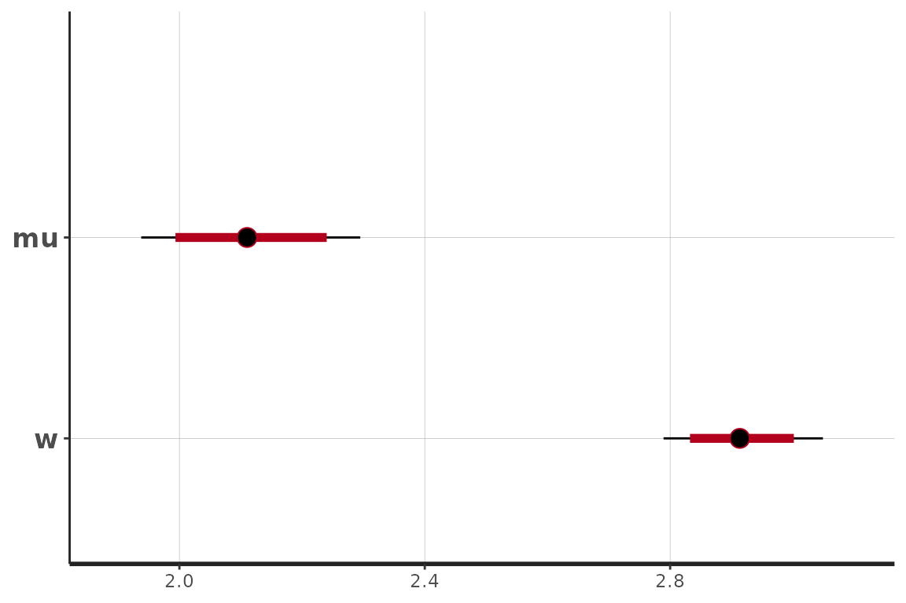
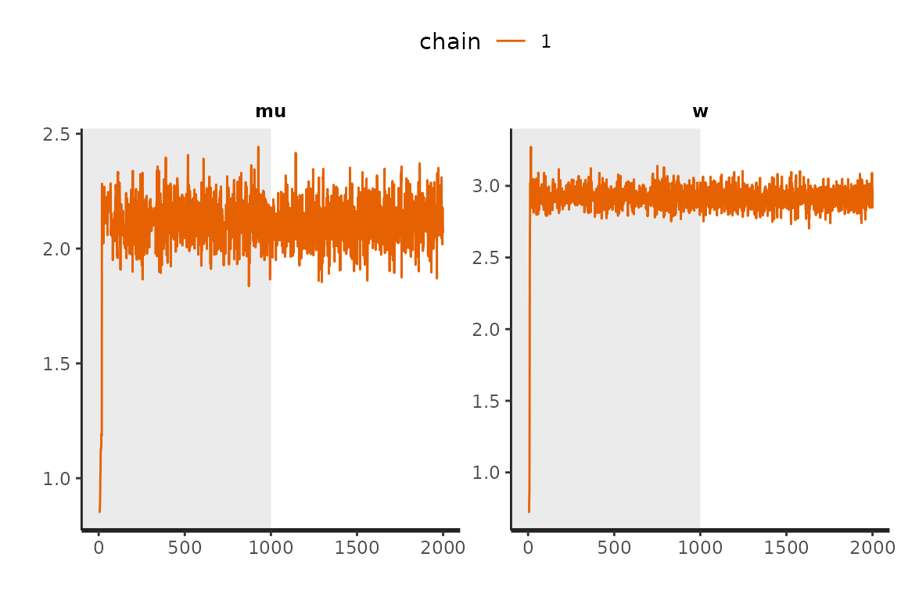
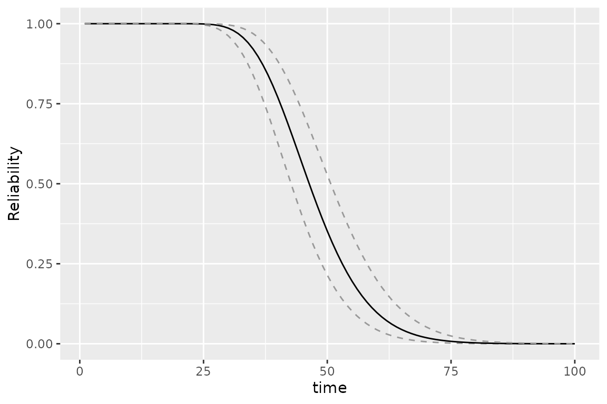
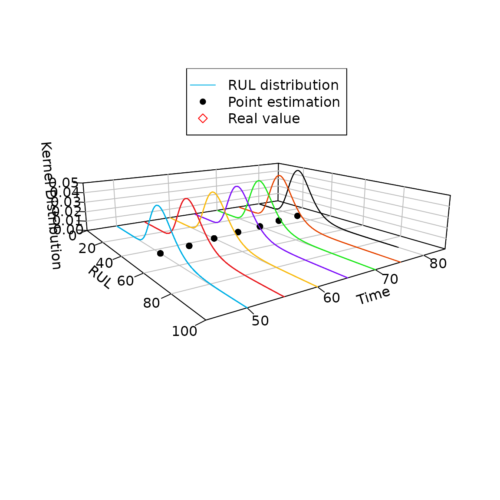

Simulation data analysis
Source:vignettes/Simulation-data-analysis.Rmd
Simulation-data-analysis.RmdThis is a basic example which shows you how to solve a common problem.
Simulate Wiener degradation paths
We use sim_dat() to generate a simulated Wiener
degradation process, where group is 6, time epoch is
t = 1:200. We denote the parameters are \(\mu = 2, \sigma = 3\). The output is a
list: (i) first part of the list is the amount of degradation of the
simulated data, (ii) second part is the increment of its
degradation.
dat <- sim_dat(group = 5, t = 1:200, para = c(2,3),
process = "Wiener",type = "classical",
s = NULL, rel = NULL)
str(dat)
#> List of 1
#> $ :'data.frame': 200 obs. of 6 variables:
#> ..$ Time: num [1:200] 0 1 2 3 4 5 6 7 8 9 ...
#> ..$ 1 : num [1:200] 0 4.66 5.83 7.27 10.4 ...
#> ..$ 2 : num [1:200] 0 0.973 3.624 5.497 11.478 ...
#> ..$ 3 : num [1:200] 0 5.82 8.55 6.6 6.12 ...
#> ..$ 4 : num [1:200] 0 2.41 5.75 8.21 7 ...
#> ..$ 5 : num [1:200] 0 -4.426 -2.962 0.781 3.058 ...Using plot_path() function to plot the simulated
degradation data.
plot_path(dat)
The object is a ggplot, so you can add other related function to change the plot. For example, let’s change the theme pattern.
plot_path(dat) + theme_bw() +
theme(panel.grid = element_blank())
Inference
For this section, we provide a tutorial for parameter estimates using
MLE and Bayesian methods. Both methods are integrated in the
sta_infer() function and just need to be set in the
"method".
MLE
The output of MLE is the dataframe contains point and interval estimates.
mle_fit = sta_infer(method = "MLE", process = "Wiener", type = "classical", data = dat)
mle_fit
#> low mean up
#> [1,] 1.9338 2.1151 2.2965
#> [2,] 2.7901 2.9183 3.0465Bayes
The output of Bayes is the resampling in rstan.
According to this object, we can do further process, e.g., prognostic,
check an so on.
bayes_fit = sta_infer(method = "Bayes", process = "Wiener", type = "classical", data = dat)
#> Running /opt/R/4.2.2/lib/R/bin/R CMD SHLIB foo.c
#> gcc -I"/opt/R/4.2.2/lib/R/include" -DNDEBUG -I"/home/runner/work/_temp/Library/Rcpp/include/" -I"/home/runner/work/_temp/Library/RcppEigen/include/" -I"/home/runner/work/_temp/Library/RcppEigen/include/unsupported" -I"/home/runner/work/_temp/Library/BH/include" -I"/home/runner/work/_temp/Library/StanHeaders/include/src/" -I"/home/runner/work/_temp/Library/StanHeaders/include/" -I"/home/runner/work/_temp/Library/RcppParallel/include/" -I"/home/runner/work/_temp/Library/rstan/include" -DEIGEN_NO_DEBUG -DBOOST_DISABLE_ASSERTS -DBOOST_PENDING_INTEGER_LOG2_HPP -DSTAN_THREADS -DBOOST_NO_AUTO_PTR -include '/home/runner/work/_temp/Library/StanHeaders/include/stan/math/prim/mat/fun/Eigen.hpp' -D_REENTRANT -DRCPP_PARALLEL_USE_TBB=1 -I/usr/local/include -fpic -g -O2 -c foo.c -o foo.o
#> In file included from /home/runner/work/_temp/Library/RcppEigen/include/Eigen/Core:88,
#> from /home/runner/work/_temp/Library/RcppEigen/include/Eigen/Dense:1,
#> from /home/runner/work/_temp/Library/StanHeaders/include/stan/math/prim/mat/fun/Eigen.hpp:13,
#> from <command-line>:
#> /home/runner/work/_temp/Library/RcppEigen/include/Eigen/src/Core/util/Macros.h:628:1: error: unknown type name ‘namespace’
#> 628 | namespace Eigen {
#> | ^~~~~~~~~
#> /home/runner/work/_temp/Library/RcppEigen/include/Eigen/src/Core/util/Macros.h:628:17: error: expected ‘=’, ‘,’, ‘;’, ‘asm’ or ‘__attribute__’ before ‘{’ token
#> 628 | namespace Eigen {
#> | ^
#> In file included from /home/runner/work/_temp/Library/RcppEigen/include/Eigen/Dense:1,
#> from /home/runner/work/_temp/Library/StanHeaders/include/stan/math/prim/mat/fun/Eigen.hpp:13,
#> from <command-line>:
#> /home/runner/work/_temp/Library/RcppEigen/include/Eigen/Core:96:10: fatal error: complex: No such file or directory
#> 96 | #include <complex>
#> | ^~~~~~~~~
#> compilation terminated.
#> make: *** [/opt/R/4.2.2/lib/R/etc/Makeconf:169: foo.o] Error 1
bayes_fit$summary
#> 2.5% mean 97.5%
#> mu 1.9378 2.1120 2.2948
#> w 2.7893 2.9154 3.0490
# print(fit1, probs = c(0.025,0.5,0.975),pars = c("mu","w"))
rstan::plot(bayes_fit$stan_re)
rstan::traceplot(bayes_fit$stan_re,pars = c("mu","w"), inc_warmup = T,nrow = 1) + theme(legend.position = "top")
Reliability and RUL
Based on the statistical inference, we use Reliability()
and RUL() to calculate the Reliability and RUL,
respectively. Then using Reliability_plot() and
RUL_plot() to plot.
reb = Reliability(t = 40, threshold = 100, par = mle_fit[,2],process = "Wiener",type = "classical")
Reliability_plot(R_time = 1:100,sum_para = mle_fit,threshold = 100,
process = "Wiener",type = "classical")
rul = RUL(t = 1:100, cur_time = 80, threshold = 150, data = dat[[1]],
par = mle_fit[,2], process = "Wiener", type = "classical")
str(rul)
#> List of 5
#> $ : num [1:100] 9.98e-121 5.00e-57 5.54e-36 1.42e-25 2.09e-19 ...
#> $ : num [1:100] 1.30e-11 2.75e-05 2.28e-03 1.60e-02 4.31e-02 ...
#> $ : num [1:100] -3.48e-08 -9.58e-06 -4.02e-05 -6.37e-05 -7.00e-05 ...
#> $ : num [1:100] -5.43e-22 -3.68e-13 -2.09e-10 -3.84e-09 -1.84e-08 ...
#> $ : num [1:100] -2.00e-45 -1.72e-25 -4.89e-19 -6.38e-16 -3.94e-14 ...
RUL_plot(fut_time = c(50,55,60,65,70,75,80),time_epoch = 1:100,
threshold = 150,zlim = c(0,0.05),xlim = c(0,100),data = dat[[1]],
para = mle_fit[,2], group = 1,
real_RUL=c(NA,NA,NA,NA,NA,NA)+40)
#> $rect
#> $rect$w
#> [1] 0.3310614
#>
#> $rect$h
#> [1] 0.1378301
#>
#> $rect$left
#> [1] -0.1409714
#>
#> $rect$top
#> [1] 0.301789
#>
#>
#> $text
#> $text$x
#> [1] -0.05568901 -0.05568901 -0.05568901
#>
#> $text$y
#> [1] 0.2673315 0.2328740 0.1984164